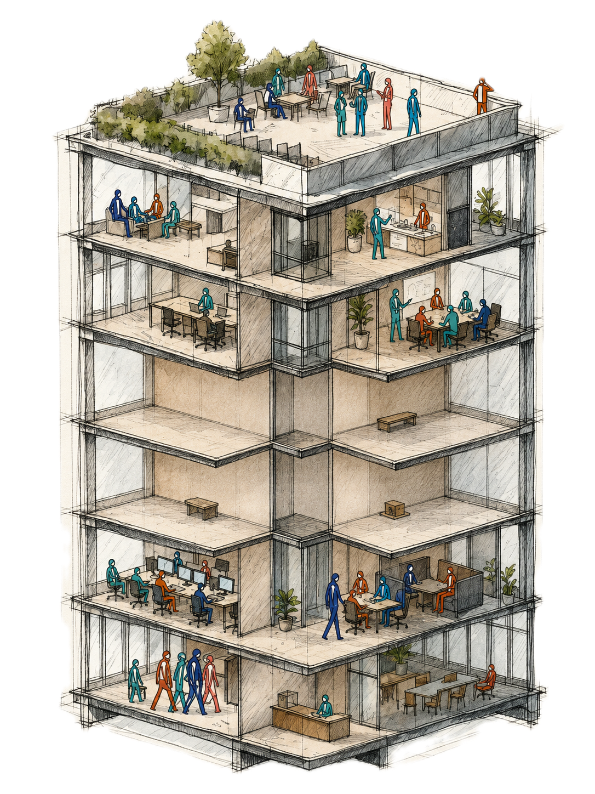

You run two organisations.
The formal one you wrote down, and the informal one that actually gets the work done. AI only knows the first.
We build the missing middle: leadership experiences where your team rebuilds its real work with frontier AI. One hour to see it. One day to feel it. One quarter to start building it.
↓ What it looks like when a leadership team meets its unwritten organisationClient testimonial.

I expected an AI bootcamp. What Marcus and his team actually did was use AI to show my team how we really work: the handovers, the assumptions, the places we quietly route around. Weeks on, we are still applying it every day. It was never about the tools, it was about seeing our own organisation clearly enough to change it. That is the leadership work now.Dr. Christof Kortz · VP Scouting & Programmes, E.ON Group Innovation
Zone 02 / Who we work with
Our clients are challengers.
- They sense that AI is 80% people and 20% tools.
- They treat AI adoption as a complex change process, not a project to delegate.
- They are done talking about frontier AI and itching to get their hands dirty.
See your leadership team in that? The 1-Day is the front door. →
Zone 03 / The suite
One hour. One day. One quarter.
We demonstrate for free. We intervene for a fee.
One hour
1:1 · remote
A 1:1 for the leader who wants to go first. Bring a real problem, not an IT question, and we work it live, with AI as your sparring partner. You leave with a first glimpse of your missing middle, and a question only the 1-Day can answer.
Book your free hour →An hour is enough to know what you have been missing.
One day
Your leadership team · one value stream
One day to understand what AI does to your leadership, not just your workflows. Your team takes one real piece of work and rebuilds it with frontier AI live in the room, watching what speeds up and what quietly breaks.
The 1-Day Experience →A day is enough to change what your team believes.
One quarter
Three months · your team
One quarter to start building your missing middle. Three months wrapped around a three-day Residency, so the unwritten gets written, capability compounds, and the new way of working survives Monday. A living Org Mirror of your organisation comes with it.
The Build →A quarter is enough to build the first bricks of the missing middle.
Start by starting. You cannot compound what you never began.
Zone 04 / The insight
The imagination gap.
Nobody asks AI for something they have never seen it do. See more, and you ask for more.
What you cannot see yetUnknown unknowns
You cannot ask for what you have never seen. A process map built overnight from your systems’ log files. A board pack drafted from raw meeting transcripts. Until you watch it happen on your own work, you do not know to want it.
What you can finally nameKnown unknowns
Once you have seen it, the questions get specific. Which of our workflows are most exposed? Where must judgment stay human? Who actually owns adoption here? The business case starts to take its own shape.
What becomes yoursKnown knowns
What felt like magic becomes Monday. First drafts arrive ready, follow-ups write themselves, and the capability stays, because the team built it rather than bought it.
The knowledge economy pays for knowing, and AI just made most knowing cheap. We build what stays scarce: judgment, know-how, trust. Sovereignty, earned only by doing the work.
Zone 05 / Who we are
Builders, not consultants.
To the AI frontier, translating what works there into what works inside your organisation.
Inside large organisations, because AI spreads the way trust does: person to person.
Online and offline, shipping real things rather than decks about them.
Three builders: twenty-five years of organisational development inside Europe’s largest corporations, deep practice in AI leadership and its cognitive effects, and a frontier operator who ships agentic systems for real teams. One mission: new organisational architectures for a post-AI world.
Zone 06 / Contact
Bring the problem that keeps coming back.
Every leader has one. It usually keeps coming back because its cause lives in the organisation nobody wrote down.
The 1-Day is four figures. The three-month Build is five.
Bring us a problemThe Brief: the thinking behind all of this, to read or share with your team →